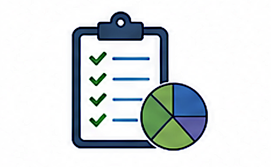

ScenarioMeasure
{kind=link}

Attributes
Attribute Code |
Attribute Name |
SQL DB Data Type |
ReportNet3 Data Type |
Properties |
Code list |
Related table(s) |
In Reporting |
|---|---|---|---|---|---|---|---|
SME_01 |
CountryCode |
varchar(2) |
string |
PK |
|||
SME_02 |
ScenarioId |
varchar(50) |
string |
PK |
ComplianceAssessmentMethod |
||
SME_03 |
ScenarioCategory |
varchar(20) |
string |
PK |
|||
SME_04 |
MeasureGroupId |
varchar(50) |
string |
PK |
MeasurementStation |
||
SME_05 |
MeasureGroupPollutionReduction |
decimal(10,2) |
numeric |
||||
SME_06 |
MeasureReductionAssessmentMethodId |
varchar(100) |
string |
ModelObjectiveEstimation |
|||
SME_07 |
Country |
varchar(20) |
string |
N |
|||
SME_08 |
Pollutant |
varchar(50) |
string |
N |
|||
SME_09 |
PollutantId |
int |
numeric |
N |
|||
SME_10 |
DataAggregationProcess |
varchar(XXX) |
string |
N |
|||
SME_11 |
DataAggregationProcessId |
varchar(50) |
string |
N |
|||
SME_12 |
Deletion |
bit |
boolean |
N |
Note
Country, Pollutant, PollutantId, DataAggregationProcess, DataAggregationProcessId and Deletion are Reference attributes without a corresponding attribute in the reporting data model.
Attribute details
SME_01 - CountryCode
Content
Country or territory ISO2 code.
In Reporting
SME_02 - ScenarioId
Content
Identifier of the scenario, given by data provider.
Remarks
It will be cross-checked against PlanScenario table.
In Reporting
SME_03 - ScenarioCategory
Content
Classification of the scenario (e.g., baseline, projection).
Remarks
ScenarioCategory: baseline or projection. It should be included in the composite PK in the next iteration of schema version.
In Reporting
SME_04 - MeasureGroupId
Content
Identifier of the pollution reduction for measure group, given by data provider.
Remarks
MeasureGroupId: distinct groups might contain one or more measures. For example, group 1 contains all the measures related to traffic, while group 2 contains all the measures related to industry. To the extreme, the group may correspond to one measure only; the same MeasureGroupId might be used for different scenarios, also - several MeasureGroupId might be declared for the same scenario.
It will be cross-checked against Measure table.
In Reporting
SME_05 - MeasureGroupPollutionReduction
Content
Reduction in air pollution concentration levels due to the applied group of measures.
Remarks
Sum of MeasureGroupAirPollutionReduction within ScenarioId should agree with the difference between value of AirPollutionLevel in the first AttainmentId and the value reported in PlanScenario as ScenarioAirPollutionLevel.
In Reporting
SME_06 - MeasureReductionAssessmentMethodId
Content
Identifier of the assessment method - model - used in the scenario, given by data provider.
Remarks
AssessmentMethodId: the model/OBE used for producing the results for the measure group (also to be declared in the Model table). It may be cross-checked against Model table, also - indirectly - against ModellingResult table.
In Reporting
SME_07 - Country
Content
Name of the country.
In Reporting
N - No corresponding reporting attribute.
SME_08 - Pollutant
Content
Name of the air pollutant being measured, as per Data Dictionary standards.
In Reporting
N - No corresponding reporting attribute.
SME_09 - PollutantId
Content
Code of the air pollutant for which the contribution is being assessed.
In Reporting
N - No corresponding reporting attribute.
SME_10 - DataAggregationProcess
Content
Label of the process of data aggregation into statistical values.
In Reporting
N - No corresponding reporting attribute.
SME_11 - DataAggregationProcessId
Content
Identifier for the process used to aggregate air quality data in the scenario.
In Reporting
N - No corresponding reporting attribute.
SME_12 - Deletion
Content
Flag to indicate that this element must be deleted.
In Reporting
N - No corresponding reporting attribute.